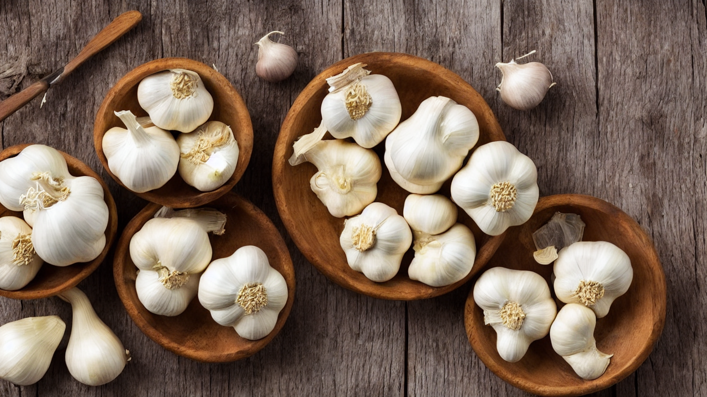
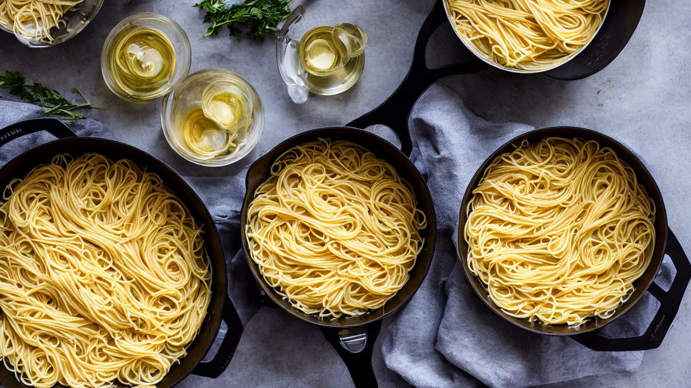
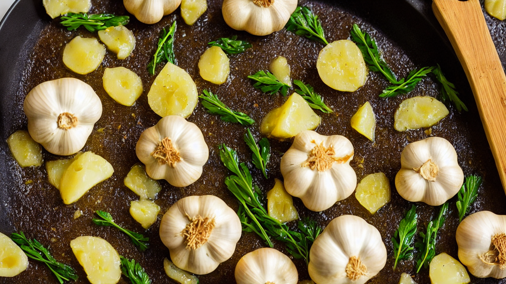
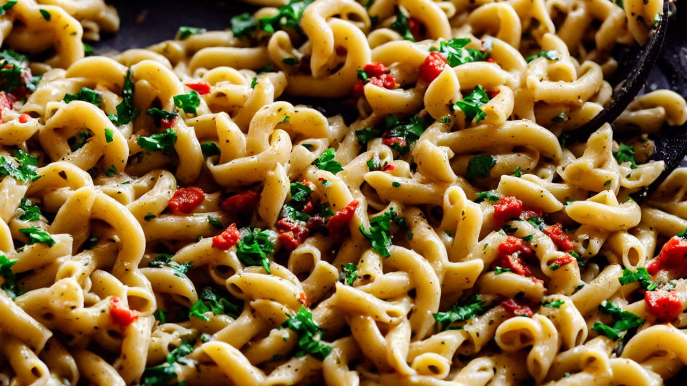
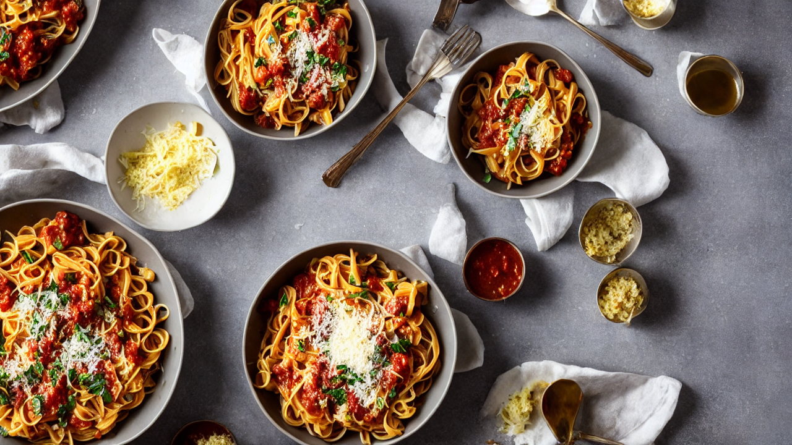
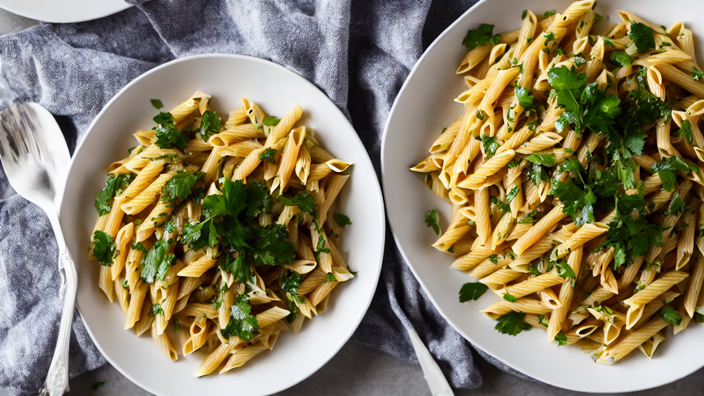

Classic Garlic Butter Pasta | Quick & Creamy Dinner Recipe
Indulge in this rich garlic butter pasta recipe with creamy sauce and tender noodles. Perfect for easy weeknight meals or cozy dinners. Watch to master the sauce in under 30 minutes!

Welcome to today’s recipe! Creamy garlic butter pasta is a comfort classic. Let’s make it together!

Start by boiling pasta until al dente. Toss with olive oil to prevent sticking while it cooks.

Melt butter in a pan, then sauté minced garlic until golden. Add cream for a velvety base.

Toss cooked pasta into the garlic butter sauce. Stir until noodles are coated and flavors meld.

Season with salt, pepper, and a touch of Parmesan. Let it simmer for a final rich, buttery finish.

Plate with fresh parsley and a drizzle of olive oil. Enjoy this creamy, comforting classic!